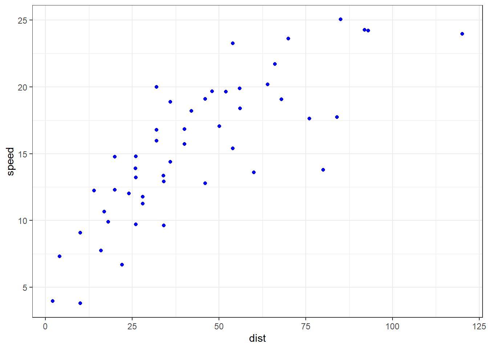

The data give the speed of cars and the distances taken to stop. Note that the data were recorded in the 1920s. It is a data frame with 50 observations on 2 variables.
| ID | Name | Type | Label | missings | Values | Value Labels |
|---|---|---|---|---|---|---|
| 1 | speed | numeric | 0 (0.00%) | range: 4-25 | ||
| 2 | dist | numeric | 0 (0.00%) | range: 2-120 | ||
The table below gives a snapshot of the first 10 data points in the Car Data set that would be used in the entire section to provide some insight of how data can be structured to provide a data-driven decision making.
speed | dist |
|---|---|
4 | 2 |
4 | 10 |
7 | 4 |
7 | 22 |
8 | 16 |
9 | 10 |
10 | 18 |
10 | 26 |
10 | 34 |
11 | 17 |
The Cars Summary table provides Summary Statistics of the two numeric Variables Speed and Distance.
Variable | n_Obs | Mean | SD | Median | MAD | Min | Max | Skewness | Kurtosis | n_Missing |
|---|---|---|---|---|---|---|---|---|---|---|
speed | 50 | 15.40 | 5.287644 | 15 | 5.9304 | 4 | 25 | -0.1175099 | -0.5089944 | 0 |
dist | 50 | 42.98 | 25.769377 | 36 | 23.7216 | 2 | 120 | 0.8068950 | 0.4050526 | 0 |
One visual is more more than a thousand - word/text explaining an outcome of a data analysis. Therefore, in this subsection we would provide some data visuals from the Cars data set. The visualization would provide a clear picture of what the data would mean in the real World set up.
From the above Histogram we Can deduce that 30 ft is the Stopping Distance of many Car. Most Cars are also stopping within 0 to 90 ft while only one Car has the Capability of stopping at 120 ft. This provides an insight whether to consider it an outlier. As a result we might be interested to plot a box plot to investigate further.
As was detected by the histogram in the previous Chat, Seemingly the Car with the Stopping distance might be an outlier in this Cars Dataset.

Parameter | Coefficient | CI | CI_low | CI_high | t | df_error | p | Std_Coefficient | Std_Coefficient_CI_low | Std_Coefficient_CI_high | Fit |
|---|---|---|---|---|---|---|---|---|---|---|---|
(Intercept) | -17.579095 | 0.95 | -31.167850 | -3.990340 | -2.601058 | 48 | 0.012318816153809090 | 0.00000000000000008705913 | -0.1697028 | 0.1697028 | |
speed | 3.932409 | 0.95 | 3.096964 | 4.767853 | 9.463990 | 48 | 0.000000000001489836 | 0.80689490068921021492798 | 0.6354692 | 0.9783206 | |
AIC | 419.1568630 | ||||||||||
AICc | 419.6786022 | ||||||||||
BIC | 424.8929320 | ||||||||||
R2 | 0.6510794 | ||||||||||
R2 (adj.) | 0.6438102 | ||||||||||
Sigma | 15.3795867 |
We fitted a linear model (estimated using OLS) to predict dist with speed (formula: dist ~ speed). The model explains a statistically significant and substantial proportion of variance (R2 = 0.65, F(1, 48) = 89.57, p < .001, adj. R2 = 0.64). The models intercept, corresponding to speed = 0, is at -17.58 (95% CI [-31.17, -3.99], t(48) = -2.60, p = 0.012). Within this model:
Standardized parameters were obtained by fitting the model on a standardized version of the dataset. 95% Confidence Intervals (CIs) and p-values were computed using a Wald t-distribution approximation.
In conclusion, linear model (estimated using OLS) to predict dist with speed (formula: dist ~ speed).The model explains a statistically significant and substantial proportion of variance (R2 = 0.65, F(1, 48) = 89.57, p < .001, adj. R2 = 0.64). The intercept is statistically significant and negative (beta = -17.58, 95% CI [-31.17, -3.99], t(48) = -2.60, p = 0.012; Std. beta = 8.71e-17, 95% CI [-0.17, 0.17]), The effect of speed is statistically significant and positive (beta = 3.93, 95% CI [3.10, 4.77], t(48) = 9.46, p < .001; Std. beta = 0.81, 95% CI [0.64, 0.98]). Standardized parameters were obtained by fitting the model on a standardized version of the dataset. 95% Confidence Intervals (CIs) and p-values were computed using a Wald t-distribution approximation.